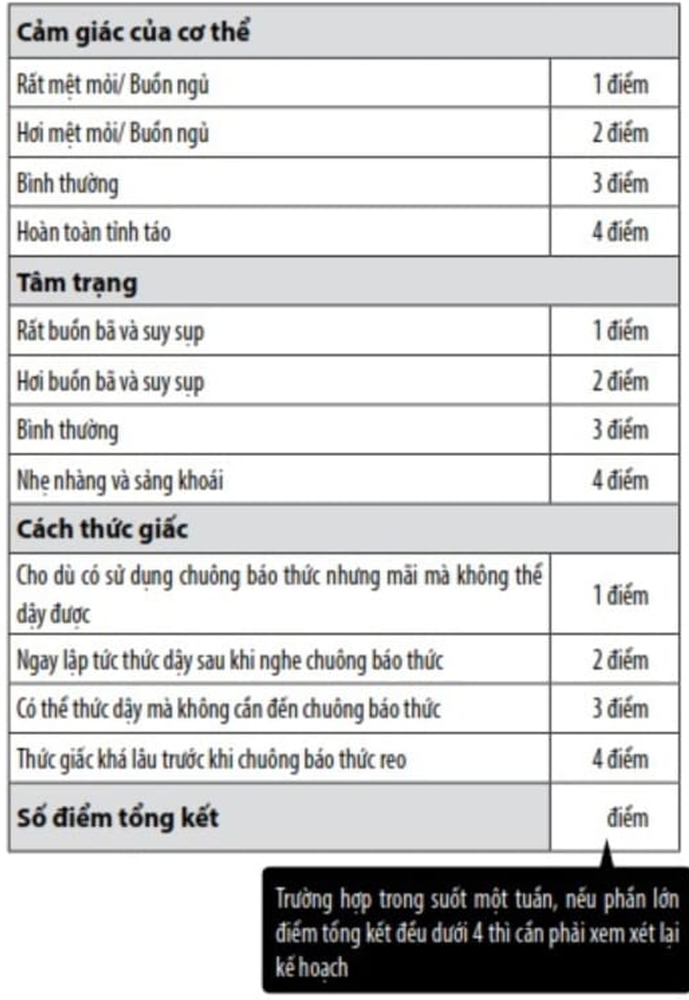

Trong khi thực hiện, hãy kiểm tra "Hiện trạng thức giấc" nhé. Chính là mỗi ngày kiểm tra xem mình có "cách thức giấc" như thế nào.
Cho dù nói là kiểm tra nhưng cũng không phải việc gì khó khăn cả. Chỉ cần bạn ghi chép đơn giản số điểm tổng kết của "Danh sách kiểm tra khi thức dậy" sau khi thức giấc là được.
Kể từ bây giờ, hằng ngày hãy xác nhận tâm trạng của bản thân mỗi khi thức giấc. Liệu rằng đã thức dậy trong tâm trạng sáng bừng và thoải mái, hay vẫn còn cảm thấy buồn ngủ rũ rượi.
Ngày thứ nhất thực hiện, đương nhiên bạn sẽ có cảm giác là muốn ngủ thêm, tuy nhiên nếu như tình trạng đó kéo dài tới cả một tuần, vậy thì bạn cần thêm một chút thời gian nữa để cơ thể dần quen với nhịp điệu sinh hoạt như vậy. Đặc biệt, khi mà số ngày có điểm tổng kết trong bảng là dưới 4 điểm, vậy thì tôi muốn bạn nhận thức được rằng, bạn đang làm quá sức.
Một điểm kiểm tra nữa để đánh giá bạn có đang quá sức trong việc rút ngắn thời gian ngủ không, đó là bạn cũng nên để ý tới tình trạng cơ thể trong thời gian suốt cả ngày, chứ không chỉ ở thời điểm thức dậy.
Ngay cả trường hợp thời gian ngủ đã đủ đi chăng nữa, vào khoảng từ 2 - 4 giờ chiều, cơn buồn ngủ vẫn sẽ kéo đến. Đó là hiện tượng tự nhiên dựa vào đồng hồ sinh học của cơ thể.
Tuy nhiên, nếu như trong ngày, vào khoảng thời gian khác, cơn buồn ngủ kéo đến, vậy thì đó là dấu hiệu của thiếu ngủ. Nguyên nhân là do cơ thể vẫn chưa hoàn toàn thích ứng với việc rút ngắn thời gian ngủ.
Giống như vậy, vào thời điểm thức dậy, cũng như trong suốt cả ngày, nếu như tình trạng cảm thấy buồn ngủ vẫn tiếp tục trong khoảng một tuần, vậy thì trước hết hãy cùng nhìn lại thời gian ngủ nhé.
Hãy tạm lùi lại kế hoạch tăng mỗi tuần 15 phút trong quá trình rút ngắn thời gian ngủ. Thay vào đó, lên kế hoạch chỉ giảm một quãng thời gian ngắn thôi, dừng lại ở 5 phút là đủ.
Không cần phải nóng vội. Sự thay đổi của đồng hồ sinh học trong cơ thể của mỗi người là khác nhau, tuy nhiên chắc chắn bạn có thể trở thành người ngủ ngắn. Cứ bước từng bước chậm rãi thôi cũng không sao cả.
DANH SÁCH KIỂM TRA KHI THỨC DẬY
